Examples
Create a plot of the first two principal components (PCA) for the
iris dataset:
pca_iris <- stats::prcomp(iris[, -5], retx = TRUE, rank. = 2)Simplest use of embed_plot: pass in data frame and it will use the
last (in this case, only) factor column it finds and the
rainbow color scheme
embed_plot(pca_iris$x, iris)")
More explicitly color by iris species, use the rainbow color scheme and also provide a title and subtitle:
embed_plot(pca_iris$x, iris$Species, color_scheme = rainbow, title = "iris PCA", sub = "rainbow color scheme")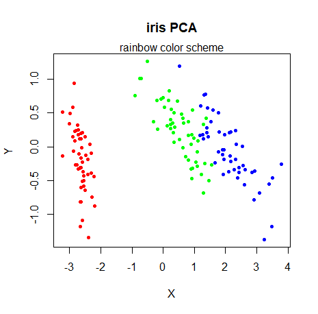
Increase the transparency of the fill color by scaling the alpha by 0.5:
embed_plot(pca_iris$x, iris$Species, color_scheme = rainbow, alpha_scale = 0.5)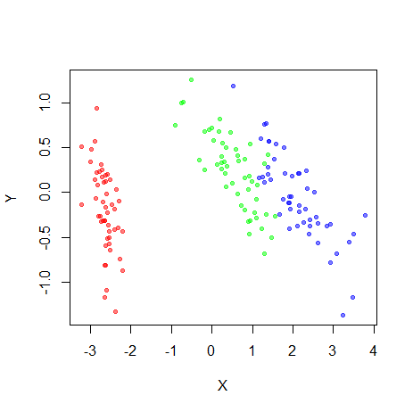
If you already have colors you want to use for each point, you can
use the colors parameter. In the example below,
colorRampPalette(c("red", "yellow"))(nrow(iris)) produces a
vector of 150 colors going from red to yellow:
my_iris_colors = colorRampPalette(c("red", "yellow"))(nrow(iris))
embed_plot(pca_iris$x, iris$Species, colors = my_iris_colors)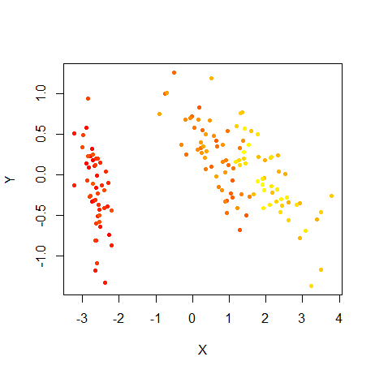
If you just want the points to be all one color you need only pass a
single value, e.g. colors = "blue". In general, if you pass
fewer colors than there are points, the colors are recycled.
Here’s another example of using a built-in palette,
topo.colors:
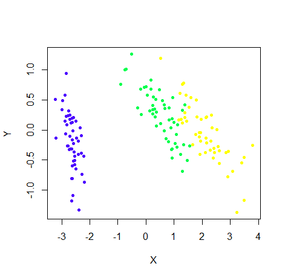
This package also includes the turbo
colormap as a palette, via the turbo function, which
works a lot like grDevices::rainbow (although reversed in
terms of colors):
embed_plot(pca_iris$x, iris$Species, color_scheme = turbo)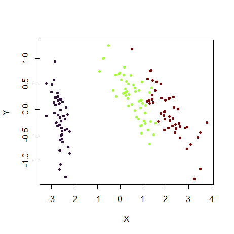
The rev argument can be used to reverse a color
scheme:
embed_plot(pca_iris$x, iris$Species, color_scheme = turbo, rev = TRUE)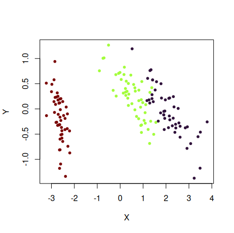
You can also provide your own palette (i.e. a vector of colors):
embed_plot(pca_iris$x, iris$Species, color_scheme = c("black", "red", "gray"))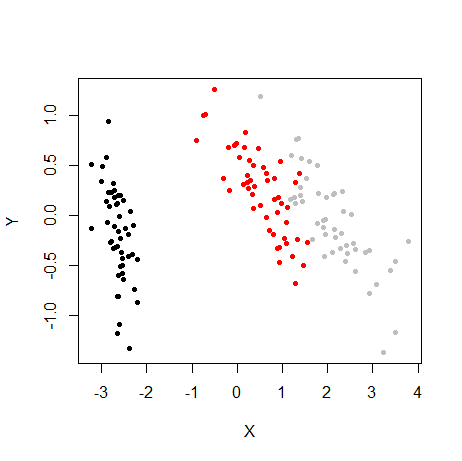
Note that if you have more colors in your palette than needed, the
extra ones are ignored: e.g. if
c("black", "red", "gray", "blue"), "blue"
would have been unused, because we only needed three colors from the
palette for this plot for the three species.
Watch out for the opposite situation where you need more
colors than your palette provides. In this case vizier will
use interpolation to get the colors it needs. This might work out for
some palettes that represent a continuous color scale (like
rainbow), but will give weird and probably undesirable
results for discrete palettes. For more details, see the Discrete
Palettes with continuous Type section in the color
schemes article.
As of R 4.0, there are some new
color palettes. You can see the options available via
grDevices::palette.pals() and generate the palette using
grDevices::palette.colors. Here’s an example using the
"Okabe-Ito" palette:
if (exists("palette.colors", where = "package:grDevices")) {
embed_plot(pca_iris$x, iris$Species, color_scheme = palette.colors(palette = "Okabe-Ito"))
}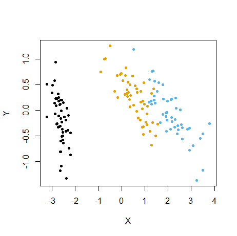
For any palette in palette.pals, you can also just
provide the palette name as a shortcut:
embed_plot(pca_iris$x, iris$Species, color_scheme = "Okabe-Ito")To force axes to be equal size to stop clusters being distorted in one direction:
embed_plot(pca_iris$x, iris$Species, color_scheme = topo.colors, equal_axes = TRUE)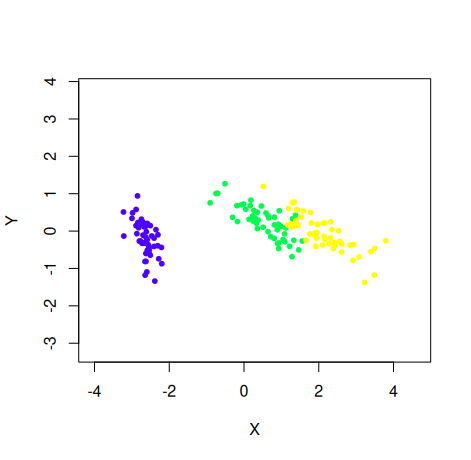
You can plot the category names instead of points, but it looks bad
if they’re long (or the dataset is large). Making the text a bit smaller
with the cex param can help:
embed_plot(pca_iris$x, iris$Species, cex = 0.75, text = iris$Species)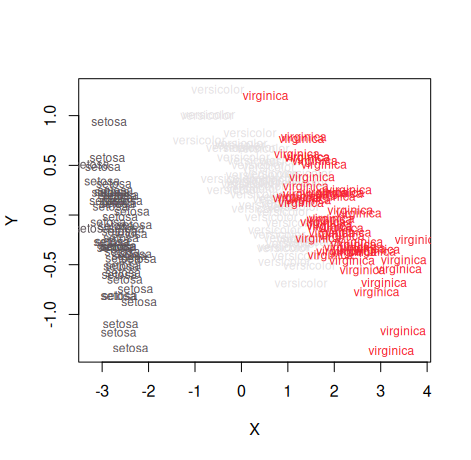
For more color schemes, Vizier makes use of the excellent paletteer
package. You can select one of the palettes on offer by (among other
ways) passing a string with the format "package::palette".
For example, to use the Dark2 scheme from the RColorBrewer
package (itself based on ColorBrewer schemes):
embed_plot(pca_iris$x, iris, color_scheme = "RColorBrewer::Dark2")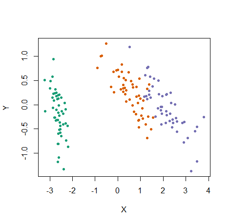
For more on selecting color schemes, see the Color schemes article. Here’s another example, using a continuous palette from RColorBrewer, useful for mapping numeric vectors to the color:
# Visualize numeric value (petal length) as a color
embed_plot(pca_iris$x, iris$Petal.Length, color_scheme = "RColorBrewer::Blues")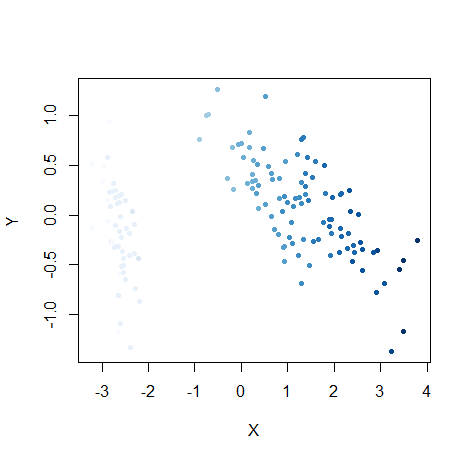
# Just show the points with the 10 longest petals
embed_plot(pca_iris$x, iris$Petal.Length, color_scheme = "RColorBrewer::Blues", top = 10)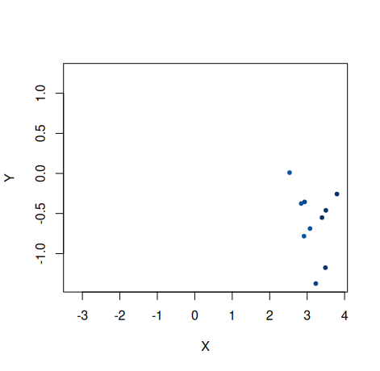
If you install the plotly package, you
can use the embed_plotly function which has the same
interface as embed_plot (except the top and
sub parameters are missing). This has the advantage of
showing a legend and tooltips:
embed_plotly(pca_iris$x, iris)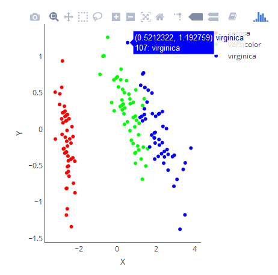
# Don't have to see a legend if custom tooltips will do
embed_plotly(pca_iris$x, iris, show_legend = FALSE, tooltip = paste("Species:", iris$Species))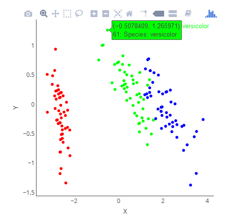